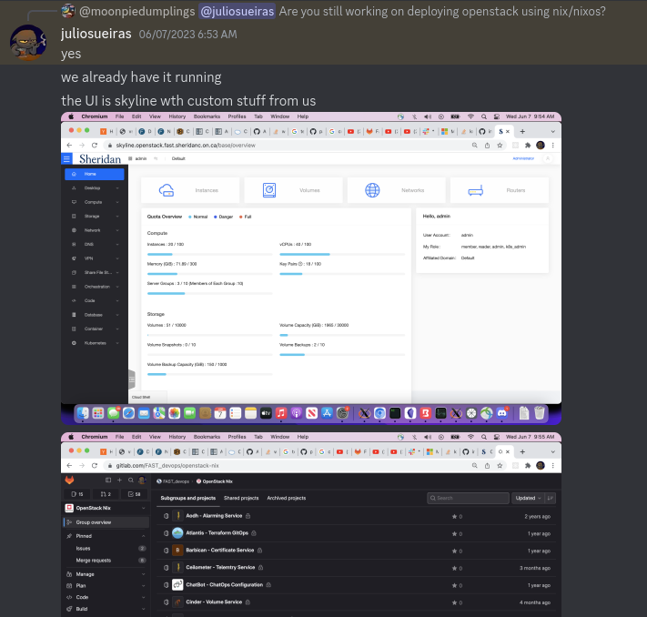

Packaging Openstack on Nixos
What is hyperconverged infrastrucuture?
Hyperconverged infrastrucucture, is when multiple aspects of computing can all be managed from the same platform. This is usually done with virtualization, like virtualized servers, or virtualized storage.
Promox Virtual Environment is one of the most popular examples of this for homelabbers, or people who manage their own servers for personal use. It offers a web based interface to configure virtual machines, virtualized storage, and clustering. When researching what software to use to manage my server, I considered proxmox.
Proxmox is based on debian linux, and is very tightly integrated into that ecosystem. It is nearly impossible to run proxmox on any other linux distro, and I disliked this inflexibility.
Openstack is an open source, public and private cloud solution, containing hyperconverged infrastructure, and more. It’s used when people don’t want to rely on external cloud solutions, like Amazon Web Services (AWS). For example, a university may decide that it is cheaper to manage and maintain their own cloud than to rely on AWS.
Openstack is massive, consisting of multiple components that must be installed and configured independently of eachother, yet set up to work with eachother. Becuase of this, openstack is usually deployed as configuration as code. The two most popular solutions, from my research, openstack-ansible, and kolla-ansible, work by deploying containerized, preconfigured installs of openstack, that connect to the bare metal portions of the system through standardized API’s like libvirt, which are easy to configure on the base system using ansible. On the other hand, because openstack is much more complex, it is easy to simply make a preconfigured container image, and distribute it out for people to use.
What is Nixos?
Nixos is an operating system that uses the nix package manager to install packages, but also the nix language for configuration. Because of this, it is a form of configuration as code.
For example, I used nix’s ability to create a shell environment to create a shell environment with quarto on linux
I asked, and searched around, looking for if there was a Nixos way to set up something like proxmox or openstack.
I first asked, but then I realized that I could search github for the nix programming language, and keywords I desired. I did so, and I found someone’s lxdware configurations
Show someone else’s configs for lxdware on nixos
{ config, pkgs, lib, ... }: {
systemd.services.docker-create-network-lxdware = {
enable = true;
description = "Create lxdware docker network";
path = [ pkgs.docker ];
serviceConfig = {
Type = "oneshot";
RemainAfterExit = "yes";
ExecStart = pkgs.writeScript "docker-create-network-lxdware" ''
#! ${pkgs.runtimeShell} -e
${pkgs.docker}/bin/docker network create lxdware || true
'';
};
after = [ "network-online.target" ];
wantedBy = [ "multi-user.target" ];
};
virtualisation.oci-containers.containers."lxdware" = {
autoStart = true;
image = "docker.io/lxdware/dashboard:latest";
volumes = [ "/services/lxdware/lxdware:/var/lxdware" ];
dependsOn = [ "create-network-lxdware" ];
extraOptions = [
# networks
"--network=lxdware"
# labels
"--label"
"traefik.enable=true"
"--label"
"traefik.docker.network=lxdware"
"--label"
"traefik.http.routers.lxdware.rule=Host(`lxd.local.bspwr.com`)"
"--label"
"traefik.http.routers.lxdware.entrypoints=websecure"
"--label"
"traefik.http.routers.lxdware.tls=true"
"--label"
"traefik.http.routers.lxdware.tls.certresolver=letsencrypt"
"--label"
"traefik.http.routers.lxdware.service=lxdware"
"--label"
"traefik.http.routers.lxdware.middlewares=local-allowlist@file, default@file"
"--label"
"traefik.http.services.lxdware.loadbalancer.server.port=80"
];
};
}Lxdware is a web based frontend for LXD, a type of hyperconverged infrastructure. LXD is a daemon, or background process, for managing containers (ran via LXC), virtual machines, and to an extent, virtualized storage. It appealed to me, when I was searching for a hyperconverged infrastructure solution for my home lab.

It’s feature rich, and mature. However, I dislike the particular implementation used in the above configuration. They ran lxdware, in a docker container. This works, and probably works well, but this isn’t a very nixos way of doing things. Nix offers reproducibility, so docker isn’t needed, and is generally frowned upon because it brings some disadvantages. I wanted to configure lxdware using nix myself.
I later looked at openstack, because I wanted to see if there was an ideal way to configure this with nixos. Nix makes it so easy to configure so many other services, just a few lines of nix code in the configuration.nix file to set up webservers, or other services.
In fact, people even discussed this in a thread posted on the Nixos discourse forums
Is there anyone actively working on being able to run an OpenStack cloud using NixOS? Shouldn’t “we” be able to do what the Kayobe project does but without the Ansible stuff? https://docs.openstack.org/kayobe/latest/configuration/reference/kolla-ansible.html 9 ```
One person replied, saying that they had done a bit, but work had “rotten since”. And indeed, when I searched around github, I found an old project, in a github repo titled nixstack
This person, or group of people, had packaged openstack to be easy to enable. But as I read through the code, I realized that the app is from the era of python2, so this code is really old.
It begins
So I decided to package it myself. At least, that’s my goal. It seems to be a massive project, but one user already did it, when I asked around on the discord.

They claimed they will open source it soon-ish, but right now, none of their work is public.
So I decided to do it myself. I have the old templates as my guides, and I know it is possible because someone else has done it.
After going through the code for nixstack, I experienced a pleasant suprise — openstack is purely a python application, and this means that it can be packages by nix’s python packaging ecosystem.
Because openstack is purely a python application, all the dependencies are declared in the requirements.txt, located in the root of the git repo of each openstack component.
Nixpkgs very large, but I don’t know if they have all of the python packages.